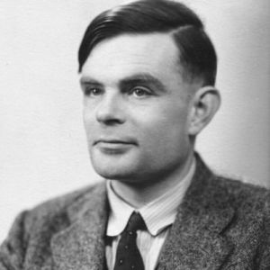
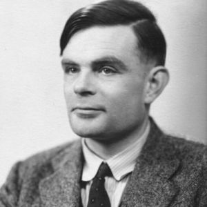

John von Neumann was a Hungarian-American mathematician, physicist, inventor, computer scientist, and polymath. He made major contributions to a number of fields, including mathematics (foundations of mathematics, functional analysis, ergodic theory, geometry, topology, and numerical analysis), physics (quantum mechanics, hydrodynamics, and quantum statistical mechanics), economics (game theory), computing (Von Neumann architecture, linear programming, self-replicating machines, stochastic computing), and statistics. Von Neumann was a child prodigy. As a 6 year old, he could multiply and divide two 8-digit numbers in his head, and could converse in Ancient Greek.
To learn more...
Elon Musk
Elon Musk
Elon musk is a South African born inventor credited with the foundation of multiple successful companies. While he was born in South Africa he moved to the United States in 1995, and became a U.S. citizen in 2002. The first company founded by Musk was Zip2. Zip2 was founded by Elon Musk and his brother Kimbal Musk in 1995. Zip2 was a software company whose primary product was a way to provide newspapers with an online presence. This software allowed for users to communicate with advertisers. Zip2 went on to acquire over 160 contracts with various newspapers, with the New York Times being one of them. Eventually Zip2 was bought by Compaq for $307 million dollars.To learn more...
Alan Turing
Alan Turing
Alan Turing was born in Maida Vale, London, while his father, Julius Mathison Turing (1873–1947), was on leave from his position with the Indian Civil Service (ICS) at Chhatrapur, Bihar and Orissa Province, in British India.[13][14] Turing's father was the son of a clergyman, the Rev. John Robert Turing, from a Scottish family of merchants that had been based in the Netherlands and included a baronet. Turing's mother, Julius' wife, was Ethel Sara (née Stoney; 1881–1976), daughter of Edward Waller Stoney, chief engineer of the Madras Railways. The Stoneys were a Protestant Anglo-Irish gentry family from both County Tipperary and County Longford, while Ethel herself had spent much of her childhood in County Clare.To learn more...
Steve Jobs
Steve Jobs
Steven Paul "Steve" Jobs (February 24, 1955 – October 5, 2011) was an American entrepreneur, businessman, inventor, and industrial designer. He was the co-founder, chairman, and chief executive officer (CEO) of Apple Inc.; CEO and majority shareholder of Pixar; a member of The Walt Disney Company's board of directors following its acquisition of Pixar; and founder, chairman, and CEO of NeXT. Jobs and Apple co-founder Steve Wozniak are widely recognized as pioneers of the microcomputer revolution of the 1970s and 1980s.To learn more...
 
